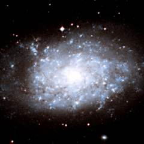
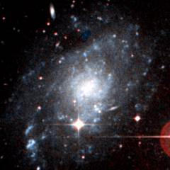
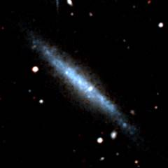
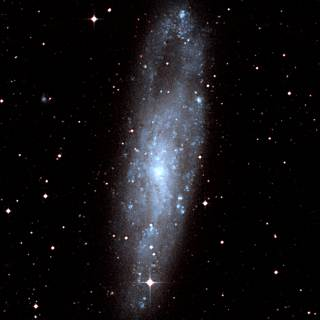
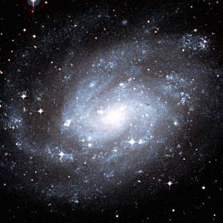
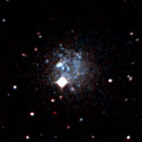
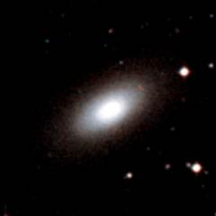
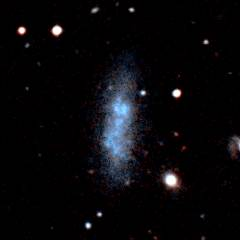

The Sculptor group is the nearest group of galaxies to the Local Group. It is an obvious group of galaxies because it contains several of the brightest galaxies in the sky (although they are all too faint to be seen with the naked eye). The nearest galaxy in this group is NGC 55 which at a distance of 5 million light years lies on the border of the Local Group.
Below - three galaxies associated with the Sculptor group. NGC 7793 (left) is a compact spiral galaxy. NGC 45 (centre) is another small spiral galaxy which may lie behind the group. ESO 471-6 (right) is one of the brightest dwarf galaxies in this group.
|  |  |  |
| NGC 7793 | NGC 45 | ESO 471-06 |
Below is a picture of NGC 55. This is the galaxy with the largest apparent size in the group because it is the nearest of the major galaxies in the group. NGC 55 is a bright, edge-on, irregular galaxy with a lot of new star formation.
This is a list of the main galaxies in the Sculptor group. This is not a complete list - many of the dwarf galaxies in this region of the sky have never been properly studied. NGC 253 is clearly the dominant galaxy in this group.
1 2 3 4 5 6 7 8 9
Name Equatorial Blue Type Size Size RV Other
Coordinates Mag (') kly km/s Names
RA Dec
ESO 407-18 23 26.5 -32 23 14.7 Irr 1.5 5 -220 UGCA 438
ESO 471-06 23 43.8 -31 57 13.8 SBm 3.5 10 -12 UGCA 442
NGC 7793 23 57.9 -32 35 9.8 Scd 9.3 35 -48
ESO 293-35 00 06.9 -41 50 16.9 Irr 0.7 2 -126
ESO 349-31 00 08.2 -34 35 15.6 Irr 1.1 5 -48 SclDIG
NGC 45 00 13.9 -23 10 11.4 SBd 7.4 30 +163
NGC 55 00 15.0 -39 12 9.6 SBm 32.4 45 -122
NGC 59 00 15.4 -21 27 13.2 S0 2.3 10 +55
Scl-dE1 00 23.9 -24 42 17.7 E 0.9 2 ? Sc 22
ESO 294-10 00 26.6 -41 51 15.7 E 1.1 5 -113
IC 1574 00 43.1 -22 15 14.6 Irr 2.1 5 +69 DDO 226
NGC 247 00 47.2 -20 46 9.7 SBcd 21.4 55 -137
NGC 253 00 47.6 -25 18 8.2 SBc 27.5 105 -36
ESO 540-30 00 49.4 -18 05 16.4 Irr 0.9 2 ? KDG 2
ESO 540-31 00 49.9 -21 01 15.2 Irr 1.7 5 +7 UGCA 15, DDO 6
ESO 540-32 00 50.4 -19 54 16.4 Irr 0.9 2 ?
NGC 300 00 55.0 -37 42 8.8 Scd 21.9 45 -94
NGC 625 01 35.1 -41 26 11.6 SBm 5.8 15 +195
ESO 245-05 01 45.1 -43 36 13.3 Irr 3.6 10 +214
|
Column 1: The usual name of the galaxy.
Column 2: The Right Ascension for epoch 2000.
Column 3: The Declination for epoch 2000.
Column 4: The blue apparent magnitude of the galaxy.
Column 5: The galaxy type: E=Elliptical, S0=Lenticular, Sa,Sb,Sc,Sd=Spiral,
SBa,SBb,SBc,SBd=Barred Spiral, Sm,SBm,Irr=Irregular.
Column 6: The angular diameter of the galaxy (arcminutes).
Column 7: The diameter of the galaxy (thousands of light years).
Column 8: The recessional velocity (km/s) of the galaxy relative to
the cosmic microwave background.
Column 9: Other names of the galaxy.
References:
Karachentsev I, Grebel E, Sharina M, Dolphin A, Geisler D, Guhathakurta P, Hodge P,
Karachentseva V, Sarajedini A, Seitzer P, (2003), Distances to nearby
galaxies in Sculptor, Astron Astrophys, 404, 93.
Jerjen H, Freeman K, Binggeli B (1998), SBF distances to Dwarf Elliptical Galaxies
in the Sculptor Group. Astron J, 116, 2873.
Cote S, Freeman K, Carignan C, Quinn P, (1997), Discovery of Numerous Dwarf Galaxies
in the Two Nearest Groups of Galaxies. Astron J, 114, 1313.
Schmidt K, Priebe A, Boller T, (1993), Nearby Galaxies. Astron Nachr, 314, 371.
The HyperLeda Database, (2003).
Below - two very similar galaxies in the Sculptor group. NGC 247 (left) and NGC 300 (right) are two medium-size spiral galaxies near the front of this group.
|  |  |
| NGC 247 | NGC 300 |
Below is a picture of NGC 253 - the largest and brightest galaxy in the Sculptor Group. NGC 253 is an example of a starburst galaxy - which means it is forming stars at a fast rate - a process which is probably triggered by numerous supernova explosions.
Below - three dwarf galaxies in the Sculptor group. ESO 407-18 (left) is an irregular dwarf galaxy which like NGC 55 is at the front of the Sculptor Group about 6 or 7 million light years from us. NGC 59 (centre) is a small elliptical/lenticular galaxy near the back of the group. IC 1574 (right) is an irregular dwarf galaxy which is also at the back of this group.
|  |  |  |
| ESO 407-18 | NGC 59 | IC 1574 |
| Properties of the Sculptor Group | |
|---|---|
| Equatorial Coordinates | RA=00h30m Dec=-30° |
| Galactic Coordinates | l=0° b=-85° |
| Supergalactic Coordinates | L=265° B=0° |
| Distance to the centre of the group | 9 million light years |
| Number of large galaxies in the group | 6 |
| Alternative names for the group | South Galactic Pole Group NGC 253 Group |